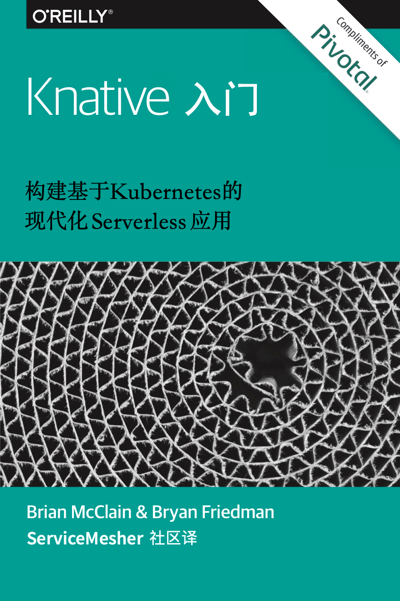

Getting Started with Knative《Knative 入门中文版》

关于本书
Getting Started with Knative 是一本由 Pivotal 公司赞助 O’Reilly 出品的电子书，英文版下载地址：https://content.pivotal.io/ebooks/getting-started-with-knative。
关于 Knative
Knative 是一个基于 Kubernetes 的，用于构建、部署和管理现代 serverless 应用的平台。
贡献
参与本书翻译请参阅规范。
版权
ServiceMesher 社区出于学习和技术交流的目的将本书翻译成中文版，如有侵权将立即删除。